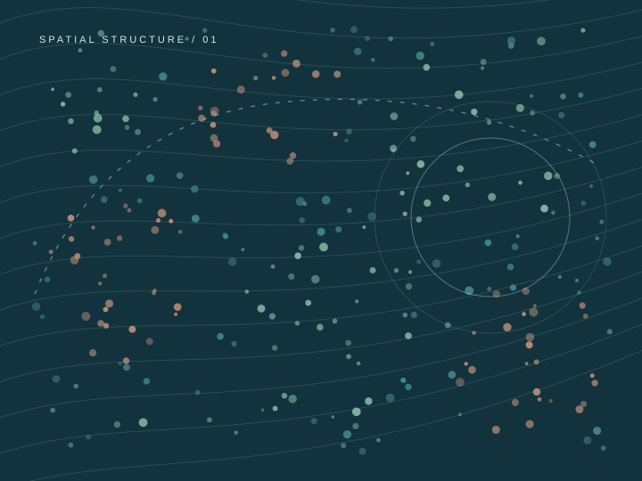

Finding structure across tissue space.
Scalable methods for spatially heterogeneous molecular expression, spatial dependence, and interpretable tissue organization.
Spatial transcriptomics · MSISOUVIK SEAL, PhD / BIOSTATISTICIAN
I develop rigorous, scalable statistical methods to discover structure in complex biomedical data—connecting spatial molecular patterns, cellular interactions, and disease biology.

01 / RESEARCH
My research combines statistical theory, efficient computation, and close collaboration with biological and clinical scientists.
Scalable methods for spatially heterogeneous molecular expression, spatial dependence, and interpretable tissue organization.
Spatial transcriptomics · MSIHierarchical and Bayesian approaches that account for donor heterogeneity, repeated tissue sections, and uncertainty.
Bayesian modeling · Multi-omicsMethods to characterize cell proximity, spatial co-expression, and complex interactions within disease microenvironments.
Multiplex imaging · Cancer02 / SELECTED WORK
A selection of work spanning spatial co-expression, tissue architecture, and computational inference.
A Bayesian fused framework for revealing how molecular relationships change across tissue locations while borrowing strength through spatial structure.
Read the paper
Illustrative spatial pattern03 / OPEN SCIENCE
Reproducible software is a central part of my research. Selected packages and code are freely available on GitHub.
Bayesian spatial co-expression and location-varying molecular relationships.
Explore repositorySpatial co-occurrence inference for multiplex imaging and cell neighborhoods.
Explore repositoryScalable spatial heterogeneity testing for transcriptomics data.
Explore repository04 / ABOUT
From statistical theory to questions that matter in human health.
I'm an Assistant Professor of Biostatistics and Bioinformatics in the Department of Public Health Sciences at the Medical University of South Carolina and a member of Hollings Cancer Center.
My work develops statistical methodology for high-dimensional biomedical data, with particular emphasis on spatial transcriptomics, multiplex tissue imaging, mass spectrometry imaging, and computational genomics. A recurring goal is to make complex biological patterns statistically interpretable and reproducible.
I earned my PhD in Biostatistics at the University of Minnesota and completed postdoctoral training at the University of Colorado Anschutz Medical Campus.
Good statistical methodology begins with a meaningful scientific question—and ends with results others can trust and use.
Teaching & mentoringCOLLABORATE / CONNECT
I welcome conversations about methodology, spatial omics, collaborative cancer research, and training.